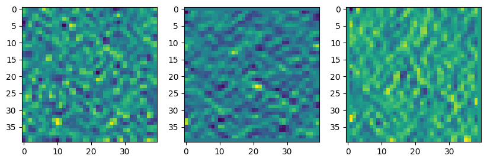
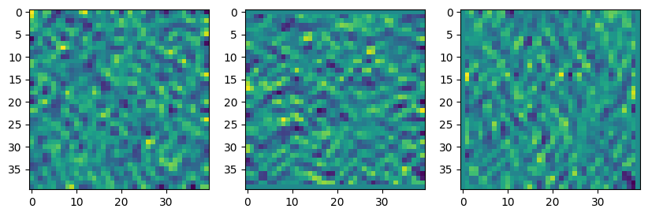
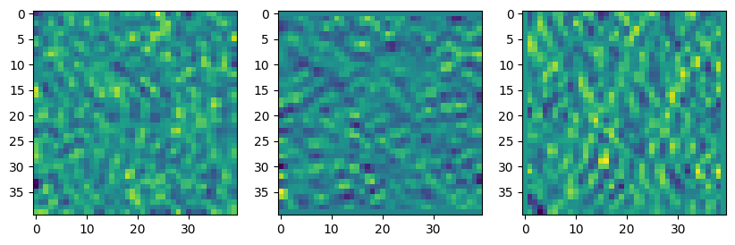
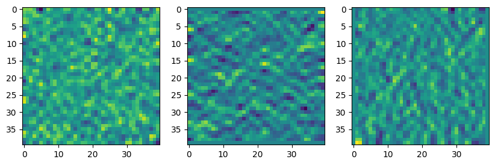

# jax.config.update("jax_enable_x64", False)
# os.environ["XLA_FLAGS"] = "--xla_gpu_deterministic_ops=true" # add xla flags
dur = 0.001
num_variations = 1024
fs = 48000
num_points = 40
simulated_modes = 25
room_size = 1
room_aspect_ratio = 1
num_example_timesteps = 100
#######################################################################################################################
solver = WaveSolver2DJax(
final_time=dur,
sampling_rate=fs,
lx=room_size,
ly=room_aspect_ratio * room_size,
spatial_delta=room_size / num_points,
n_max_modes=simulated_modes,
)Wave 2D linear solver
adapted from Paker repo
WaveSolver2DJax
WaveSolver2DJax (sampling_rate:int=48000, final_time:float=0.02, rho:float=1.2041, n_max_modes:int=10, lx:float=1.0, ly:float=1.0, c0:float=343, damping=1.0, spatial_delta=0.001)
Initialize self. See help(type(self)) for accurate signature.
| Type | Default | Details | |
|---|---|---|---|
| sampling_rate | int | 48000 | 1/s Temporal sampling frequency |
| final_time | float | 0.02 | s Duration of the simulation |
| rho | float | 1.2041 | kg/m**3 Density |
| n_max_modes | int | 10 | Number of modal expansion terms |
| lx | float | 1.0 | m Length in x direction |
| ly | float | 1.0 | m Length in y direction |
| c0 | float | 343 | m/s Speed of sound |
| damping | float | 1.0 | Damping factor |
| spatial_delta | float | 0.001 | m Spatial sampling grid |
# jax.config.update("jax_enable_x64", False)
fe_x = solver.create_random_initial(np.random.default_rng(42))
# fe_x = solver.create_impulse(0.5, 0.5)
ybar, y_sp, y_vx, y_vy = solver.solve(fe_x)
ybar_vander, y_sp_vander, y_vx_vander, y_vy_vander = solver.solve(fe_x, parallel=True)
diff_ybar = np.abs(ybar - ybar_vander)
diff_y_sp = np.abs(y_sp - y_sp_vander)
diff_y_vx = np.abs(y_vx - y_vx_vander)
diff_y_vy = np.abs(y_vy - y_vy_vander)
print("ybar diff", np.max(diff_ybar))
print("y_sp diff", np.max(diff_y_sp))
print("y_vx diff", np.max(diff_y_vx))
print("y_vy diff", np.max(diff_y_vy))ybar diff 0.0
y_sp diff 0.0
y_vx diff 0.0
y_vy diff 0.0print(y_sp.shape, y_vx.shape, y_vy.shape)
fig, ax = plt.subplots(1, 3, figsize=(10, 5))
ax[0].imshow(y_sp[:,:,200])
ax[1].imshow(y_vx[:,:,200])
ax[2].imshow(y_vy[:,:,200])(40, 40, 48) (40, 40, 48) (40, 40, 48)
Save a fast dataset
create_2d_wave_data
create_2d_wave_data (num_ics:int, data_dir:str, W:int=40, dur:float=0.01, sample_rate:int=48000, simulated_modes:int=25, seed:int=42, ic_type:str='random')
| Type | Default | Details | |
|---|---|---|---|
| num_ics | int | number of initial conditions | |
| data_dir | str | directory to save the data | |
| W | int | 40 | width |
| dur | float | 0.01 | time |
| sample_rate | int | 48000 | sampling rate |
| simulated_modes | int | 25 | number of modes |
| seed | int | 42 | random seed |
| ic_type | str | random | type of initial condition (random or impulse) |
data_dir = "2d_wave_data"
create_2d_wave_data(1000, data_dir, ic_type="random")Total size in GB 0.000192100%|██████████| 1000/1000 [01:30<00:00, 11.01it/s]import matplotlib.pyplot as plt# check the data, the first 3 files should be different
for i in range(1, 4):
data = np.load(f"{data_dir}/ic_{i:05d}.npy")
print(data.shape)
fig, ax = plt.subplots(1, 3, figsize=(10, 5))
ax[0].imshow(data[100, :, :, 0])
ax[1].imshow(data[100, :, :, 1])
ax[2].imshow(data[100, :, :, 2])
plt.show()(480, 40, 40, 3)
(480, 40, 40, 3)
(480, 40, 40, 3)

